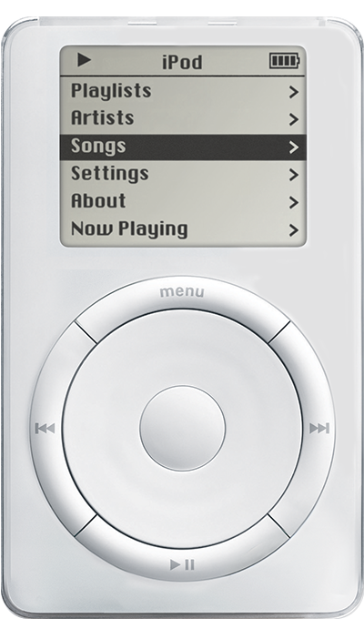
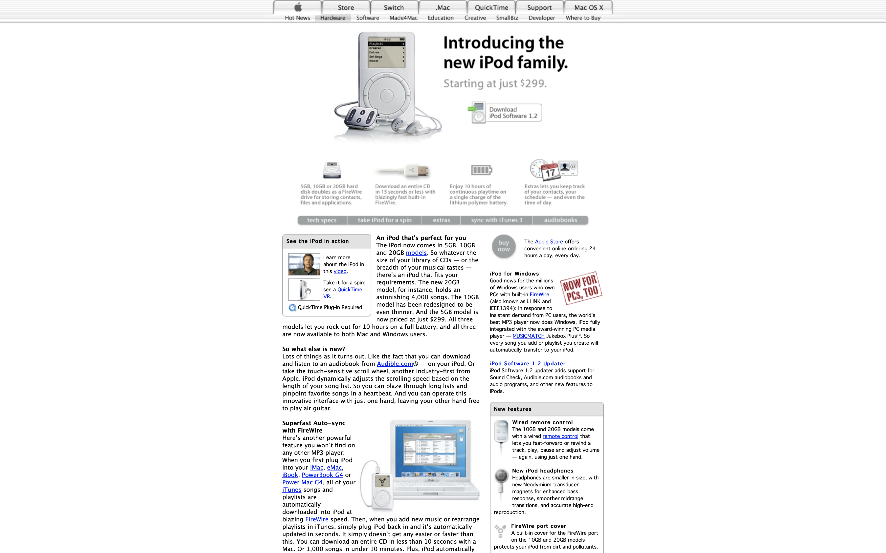

An iPod that’s perfect for you
The iPod now comes in 5GB, 10GB and 20GB models. So whatever the size of your library of CDs — or the breadth of your musical tastes — there’s an iPod that fits your requirements. The new 20GB model, for instance, holds an astonishing 4,000 songs. The 10GB model has been redesigned to be even thinner. And the 5GB model is now priced at just $299. All three models let you rock out for 10 hours on a full battery, and all three are now available to both Mac and Windows users.
All iPod (Touch Wheel) models have a FireWire port cover. Scroll wheel models don't, and dock connector models don't have a FireWire port. The iPod (Touch Wheel) model controls look similar to the iPod (Scroll Wheel) but the touch wheel itself doesn't turn. iPod (Touch Wheel) models are considered second-generation iPod models.
 